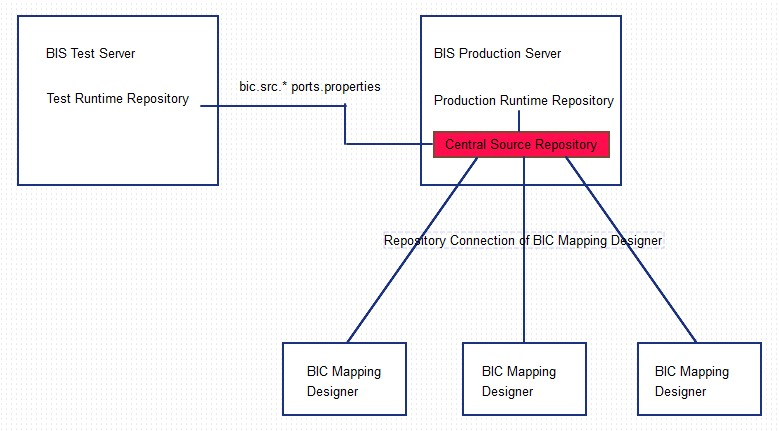

Previous
Previous  Table of Contents
Table of Contents 

Walkthrough
Overview
|
{kind=link}
As in the introduction described, the common scenario has the following installations on different systems:
- BIS test instance
- BIS production instance
- One or more BIC Mapping Designer client installation
The BIS instances have both a runtime repository for running the mapping with in their processes. The runtime repositories of the instances and the BIC Mapping Designers should be connected to one central source repository. It is recommended to use the source repository of the production instance. This scenario has the follwoing advantages:
- Both test and production systems access the same source repository → the source versions of the objectes are the same, so it is possible to have the same versions running on the test and the production system.
- In an upgrade scenario the test system can be updated to the newest version for tests → the cross version support allows the test mapping management to access the central source repository on the "old" production system, and generate new runtime versions for the test. The update of the production systems and the BIC Mappings Designer are done after a successful test on the test system. Therefore it is recommended to have the central source repository on the production system. The single steps of an example update are described in the topic Example Update Scenario.
|  |
| Organization Central Source repository |
{kind=link}
The test server is connected with the bic.src.+ properties in the configuration file ports.properties to the central repository. For further information please read the topic Central Repository Configuration. The BIC Mapping Designer can be connected to the central source repository with a Create Repository Connection.